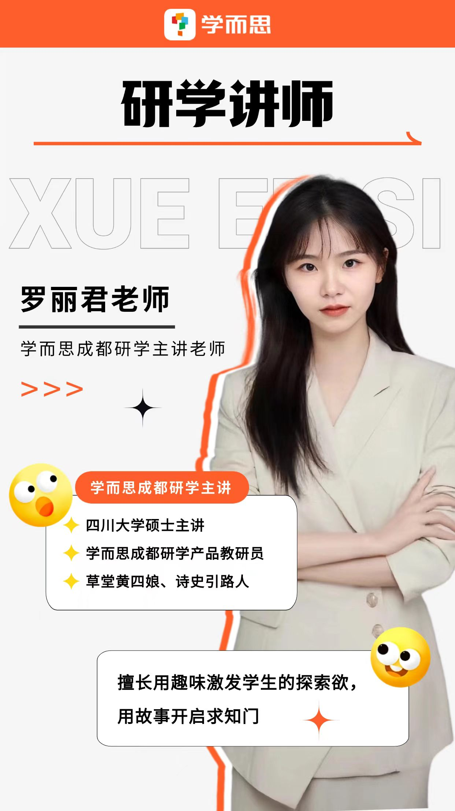

REAL BUSINESS CASE / STUDY TOUR
学而思研学｜杜甫草堂研学项目
真实业务交付 · 用户接触 · 产品体验优化
真实落地项目
20+场
独立主讲交付
累计执行
200+人次
累计服务学生
家长社群同步运营
8–15人
单场规模
小班化交付
399元
学生售价
真实商业定价
我的角色与真实业务链路
我的角色
- 研学主讲：独立完成课程讲解与活动带领
- 现场运营：学生管理、安全维护、秩序把控
- 家长沟通：行前通知、社群答疑、反馈收集
- 执行衔接：集合、交通、团中流程把控
- 产品反馈：参与咨询并沉淀用户反馈
真实业务链路 · 我的参与点
明星主讲直播销售
→
家长咨询 / 报名
→
线下研学交付深度参与
→
用户反馈直接接触
→
体验优化
在“交付—反馈”环节深度参与，直接接触学生、家长与教师，是产品体验的一线感知者和优化建议的提出者。
一线观察：从“带队”看到“产品”
USER INSIGHT｜用户触点
直接接触学生、家长和教师，观察到家长重点关注安全、集合、交通、时间安排与教育价值；学生更关注趣味性、互动和参与感。
→ 行动：在行前通知中主动增加安全提示与集合说明
PRODUCT OPTIMIZATION｜体验优化
发现原有讲解词偏生硬后，主动调整趣味化表达与互动方式；同时提出增加研学证书等成果物的优化建议。
→ 行动：现场调整讲解节奏，增加学生提问与互动环节
明星主讲直播现场 & 学而思主讲标签

直播讲解

互动环节

产品展示

学而思主讲标签